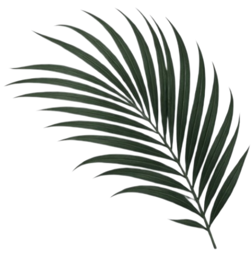

Raka & Sinta
Dengan memohon rahmat dan ridho Allah SWT, kami bermaksud menyelenggarakan pernikahan kami:
"Dan di antara tanda-tanda (kebesaran)-Nya ialah Dia menciptakan pasangan-pasangan untukmu dari jenismu sendiri, agar kamu cenderung dan merasa tenteram kepadanya, dan Dia menjadikan di antaramu rasa kasih dan sayang."
(QS. AR-RUM: 21)Mempelai Bahagia
Dengan memohon rahmat Allah SWT, kami mengundang Bapak/Ibu/Saudara/i pada pernikahan putra-putri kami:

Kisah Cinta Kami
"Tidak ada kebetulan dalam takdir Allah. Setiap detik perjalanan yang kami lalui adalah persiapan untuk menyatu dalam ikatan yang suci ini."
24 . 05 . 2025

Akad Nikah
Sabtu, 24 Mei 2025
Pukul 08.00 WIB - Selesai
Gedung Graha Saka, Jl. Melati No. 12, Yogyakarta
Buka Google Maps ↗Resepsi Pernikahan
Sabtu, 24 Mei 2025
Pukul 11.00 - 14.00 WIB
Gedung Graha Saka, Jl. Melati No. 12, Yogyakarta
Buka Google Maps ↗Gedung Graha Saka
Jl. Melati No. 12, Kotabaru, Yogyakarta

Tersedia parkir kendaraan roda 2 dan roda 4.

Galeri Foto
Potret cinta dan kebahagiaan kami


"Cinta bukanlah tentang menemukan seseorang yang sempurna, tetapi tentang melihat seseorang yang tidak sempurna dengan cara yang sempurna."
Tanda Kasih
Doa restu Anda merupakan karunia terindah bagi kami. Namun jika memberi adalah tanda kasih Anda, kami menyediakan dompet digital berikut:
1234 5678 90
a.n. Raka Pratama
0987 6543 21
a.n. Sinta Maharani
Jl. Melati No. 12, Kotabaru, Kec. Gondokusuman, Kota Yogyakarta (u.p Raka & Sinta)
Konfirmasi & Doa Restu
Kehadiran dan doa Anda adalah kado terindah bagi kami
Andi Saputra
24 Mei 2025Happy wedding Raka & Sinta! Semoga selalu dalam lindungan Allah SWT dan menjadi keluarga yang sakinah mawaddah warahmah.
Nadia & Dimas
24 Mei 2025Selamat menempuh hidup baru sahabatku tercinta! Bahagia selalu selamanya ya!
Merupakan suatu kehormatan dan kebahagiaan bagi kami apabila Bapak/Ibu/Saudara/i berkenan hadir dan memberikan doa restu bagi kami.
Wassalamu'alaikum Warahmatullahi Wabarakatuh
Kami yang berbahagia,
Raka & Sinta
© 2025 The Wedding of Raka & Sinta